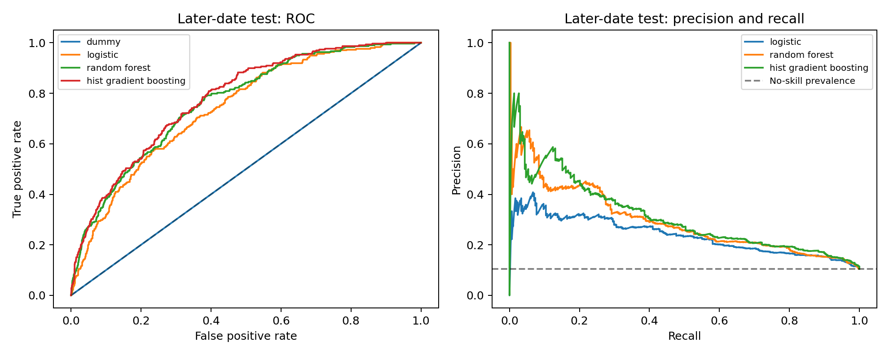

Rebuilding the Seattle parking experiment
First benchmark complete · Packaging and review in progressThis is the new, AI-assisted reconstruction of your Seattle group project. It uses real source data and newly trained models. Historical coursework results remain separate.
1. Define what we predict
The inputs are time, location, parking capacity, price and weather. The target is paid occupancy ≥ 95% of stated capacity. Occupancy and anything derived from it are excluded from model inputs. This is classification at an observation time, not a future parking forecast.
2. Inspect the actual data
We scanned 10,366,111 records from three source files and retained 47,990 valid sampled rows. This is a bounded educational benchmark with gaps in calendar coverage. About 48% of parking rates are missing; the preprocessing pipeline learns imputation values from training data.
3. Separate training, validation and testing
Dates are ordered chronologically. One whole date is removed at each boundary. Model choice and the decision threshold use validation data.
4. Compare models on later dates
The table uses a common probability threshold of 0.5. The dummy model gets high accuracy while detecting no near-full cases. That is why we also examine F1, recall, ROC AUC and average precision.
| Model | Accuracy | Macro F1 | Recall | ROC AUC | Average precision |
|---|---|---|---|---|---|
| Dummy | 0.896 | 0.472 | 0.000 | 0.500 | 0.104 |
| Logistic | 0.617 | 0.510 | 0.721 | 0.740 | 0.238 |
| Random Forest | 0.789 | 0.608 | 0.523 | 0.764 | 0.297 |
| Hist Gradient Boosting | 0.897 | 0.502 | 0.030 | 0.778 | 0.313 |
Validation selects Random Forest. Its validation-selected threshold is 0.51. At this threshold, test precision is 0.267, recall is 0.487 and macro F1 is 0.615. These results show useful signal and substantial remaining errors.

5. What we are building next
- Execute and inspect the complete notebook.
- Verify saved models reproduce the recorded predictions.
- Package the notebook, models, results and decision records on GitHub.
- Add School Projects and a Seattle parking case study to your portfolio.
- Refine your interview answers around decisions and results you can explain.
See the exact experiment configuration
{
"seed": 6300,
"sample_fraction": 0.005,
"parts": [
0,
27,
55
],
"target": "PaidOccupancy / ParkingSpaceCount >= 0.95",
"task": "same-time classification, not future forecasting",
"split": "chronological whole dates, 60/20/20; one entire date purged at each boundary",
"selection": "validation macro F1 at threshold 0.5; positive-class threshold selected on validation only",
"cpu_threads": 2,
"gpu": false
}Local review page · Not yet a published portfolio update.